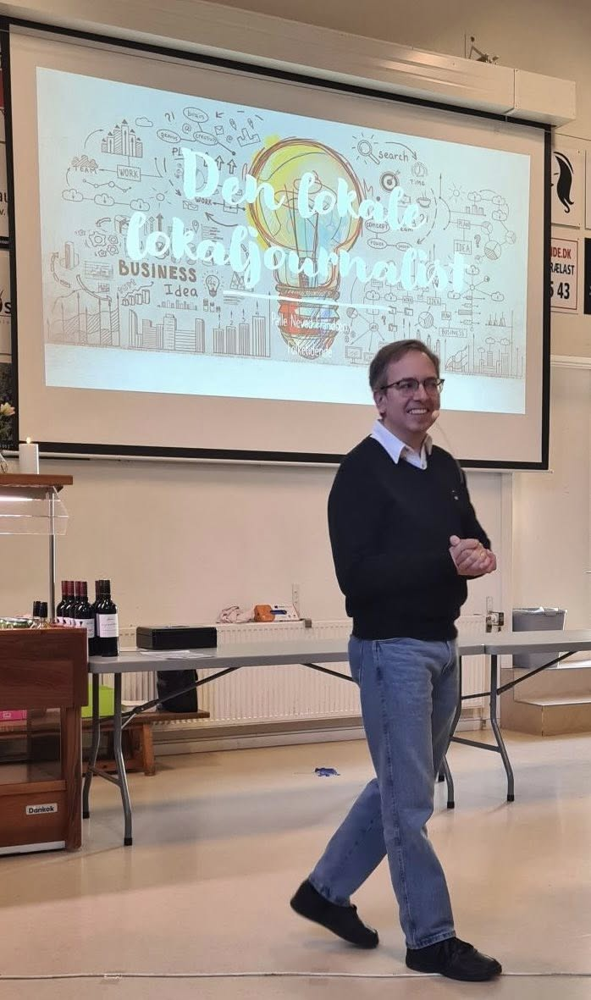

← Til forsiden
Foredrag
Uanset om det handler om journalistik, lokalpolitik, kultur eller livet i Filippinerne, er mine foredrag personlige, nærværende og altid med en fortælling i centrum. Jeg tror på, at historier binder os sammen – og at et godt foredrag skal mærkes, ikke bare høres.
1. Historier der binder os sammen – 20 år som lokaljournalist
Hvordan finder man de historier, der virkelig betyder noget? I over 20 år har jeg dækket stort og småt på Lolland (og lidt på Falster) – og jeg har lært, at de bedste historier næsten altid gemmer sig i det nære. Dette foredrag handler om at se verden gennem lokale briller, om at give stemme til dem, der sjældent bliver hørt – og om hvorfor journalistik stadig betyder noget.
- Fortællinger fra hverdagen som lokaljournalist
- Indblik i, hvordan små historier skaber store fællesskaber
- Ærlige refleksioner om troværdighed og tillid i medierne
- Et glimt af livet bag avisforsiden
2. Når verden rammer lokalt – journalistik i kriser og forandring
Hvordan fortæller man historier, når alt ramler? Med baggrund i mit speciale i krigs-, krise- og katastrofejournalistik deler jeg erfaringer med at formidle svære emner – og samtidig bevare både empati og menneskelighed. Foredraget handler også om forandring: i medierne, i arbejdet og i livet.
- Personlige historier om journalistik i pressede situationer
- Tanker om etik og ansvar, når det gælder
- Hvordan man bevarer sin ro og retning midt i forandring
- Inspiration til at finde mening i kaos
3. Fra papir til pixels – at overleve (og trives) i den digitale revolution
Der var engang, vi slog op i Lademanns Leksikon – i dag bruger jeg ChatGPT. Dette er en personlig rejse gennem 20 års teknologisk forandring i journalistikken. Om at blive ved med at lære nyt, selv når man synes, man burde være færdig med at lære.
- Et humoristisk kig på mediebranchens digitale udvikling
- Erfaringer med AI, sociale medier og nye redskaber
- Ærlige tanker om modstand, nysgerrighed og fornyelse
- Tips til at trives i en verden, der hele tiden forandrer sig
4. Fællesskab og frivillighed – hvorfor det stadig betyder noget
Midt i en travl hverdag kan frivillighed virke som en luksus – men det er i virkeligheden det, der får samfundet til at hænge sammen. Jeg fortæller om mit arbejde i skolebestyrelse, Rotary og lokale foreninger, og hvorfor det giver mening at engagere sig dér, hvor man bor.
- Historier om samarbejde, sammenhold og lokal stolthed
- Erfaringer med ledelse og udvikling i frivillige fællesskaber
- Inspiration til at gøre en forskel – også i det små
- Et kærligt blik på det Danmark, der stadig står sammen
5. Kulturen skaber fællesskab – hvordan musik, teater og litteratur binder os sammen
Kultur er ikke bare noget, man ser – det er noget, man mærker. Jeg fortæller om at være med til at skabe koncerter på egnsteatret, om glæden ved teater, musik og litteratur – og om hvordan kulturen kan samle mennesker på tværs af alder, baggrund og forskellighed.
- Historier fra det lokale kulturliv
- Tanker om kultur som lim i et samfund
- Eksempler på, hvordan små initiativer kan skabe stor glæde
- Et foredrag fyldt med musikalsk begejstring og menneskelighed
6. Filippinerne – set gennem danske øjne
Hvordan ser verden ud, når man møder den med åbne øjne – og åbent hjerte?Jeg fortæller om livet mellem Danmark og Filippinerne, om mødet med et varmt og gæstfrit folk, og om de kulturforskelle, der både kan forundre og berige.
- Personlige fortællinger om kærlighed, familie og kulturmøder
- Et ærligt blik på Filippinerne – langt fra turistbrochurerne
- Hvad vi danskere kan lære af filippinsk livsglæde
- Smil, eftertanke og måske lidt rejselyst
7. Journalistik på skoleskemaet – en rejse ind i journalistikken for elever i udskolingen
Hvordan lærer man unge at stille de gode spørgsmål – og tænke selv? Dette foredrag er for lærere, elever og forældre, der er nysgerrige på, hvordan journalistik kan bruges i undervisningen – og i livet. Jeg deler erfaringer fra projekter, hvor elever selv har prøvet kræfter med den virkelige journalistrolle.
- Konkrete ideer til undervisning og projekter
- Eksempler på, hvordan journalistik styrker sproget og fællesskabet
- Tanker om unges medieforståelse og kritiske sans
- Et inspirerende blik ind i fremtidens klasseværelse
Booking: Skriv til palle.frandsen@gmail.com eller ring på +45 51 23 93 36. Du kan også bruge formularen nederst på forsiden.